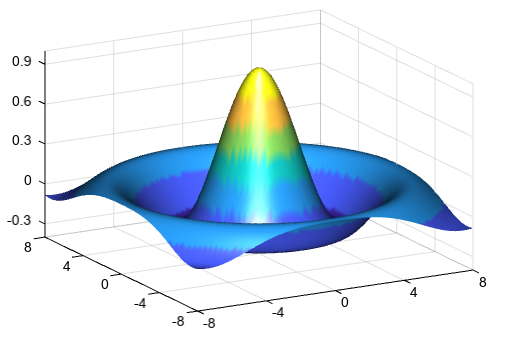

surf¶
- Axes3DGL.surf(*args, **kwargs):
creates a three-dimensional surface plot
- Parameters
x – (array_like) Optional. X coordinate array.
y – (array_like) Optional. Y coordinate array.
z – (array_like) 2-D z value array.
cmap – (string) Color map string.
lighting – (bool) Using light or not.
- Returns
3D surface graphic
Example of 3D surface plot
x = y = arange(-5, 5, 0.5) x, y = meshgrid(x, y) z = y * sin(x) + x * cos(y) surf(x, y, z, 20, edgecolor='b', cmap='MPL_gist_rainbow', facecolor='flat', alpha=0.5) colorbar(shrink=0.8, ticklen=2) zlim(-10, 10)

3D surface plot with lighting
tx = ty = linspace(-8, 8, 81) xx, yy = meshgrid(tx, ty) r = sqrt(xx ** 2 + yy ** 2) + 2.2204e-16 tz = sin(r) / r #Plot lighting(position=[0,0,1,0], mat_specular=[1,1,1,1]) surf(xx, yy, tz, facecolor='interp', edgecolor=None) zlim(-0.4, 1)
3D surface relief plot
#Relief data fn = 'D:/Temp/nc/elev.0.25-deg.nc' f = addfile(fn) elev = f['data'][0,::4,::4] lon = elev.dimvalue(1) lat = elev.dimvalue(0) lon, lat = meshgrid(lon, lat) #Plot axes3d() grid(False) surf(lon, lat, elev, 20, cmap='MPL_terrain', facecolor='interp', edgecolor=None) zlim(-8000, 20000) xlabel('Longitude') ylabel('Latitude') zlabel('Altitude') colorbar(shrink=0.8) title('Surface 3D plot example')